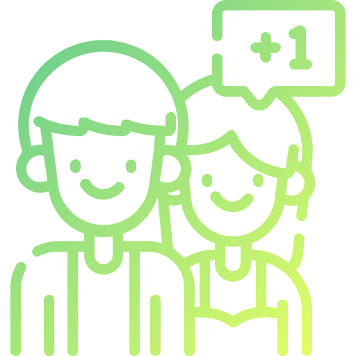
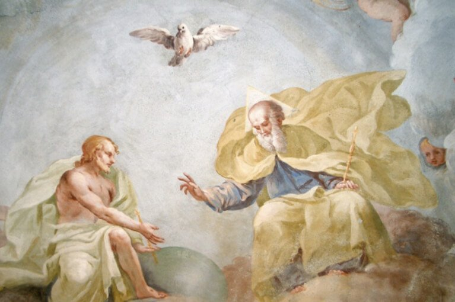

Aldeias
de Vida
Somos uma realidade inspirada por Deus, uma Associação Civil de Fieis a serviço da Igreja, da sociedade.

Nossas
Espiritualidades
Nossos
Valores

Aldeias
Específicas
Guardiões
das Aldeias
FUNDADOR
Aquele a quem Deus concedeu o Dom de Decifrar a Identidade, Missão, Objetivos, Valores, a
Espiritualidade e a organização das Aldeias de Vida como um todo. Sua principal Missão é
passar para toda a Aldeia e em especial ao Guardião Geral e os Guardiões de Estado tudo o
que diz respeito àquilo que Deus inspirou, inspira e venha a inspirar acerca das Aldeias, na
Identidade, Espiritualidade, Missão e na organização prática e
metodológica.
Fundador: Pe. Pedro de Almeida Cunha
GUARDIÃO GERAL
Aquele que o Fundador, inspirado por Deus e verificando a presença do Dom de Deus, chamou
para zelar e garantir a plena vivência da Identidade, Missão, Objetivos, Valores,
Espiritualidade e organização das Aldeias de Vida em cada lugar onde ela vier a existir.
Guardião Geral exerce o seu Serviço, com a equipe formada pelos Guardiões de Estado e os
presidentes das Associações Aldeias de Vida existentes no país.
Guardião Geral:
Pedro Ivo Queiroz de Aquino
GUARDIÃO DE ESTADO
Pessoa que o Fundador em comunhão
com o Guardião Geral, escolhe, verificando a presença do Dom de Deus, e chama para que possa
zelar e garantir a plena vivência da Identidade, Missão, Objetivos, Espiritualidade, Valores
e a organização das Aldeias de Vida em cada estado onde houver um núcleo em formação ou
formado. Esta Pessoa exerce seu serviço em comunhão com o Guardião Geral, as Coordenações de
Núcleo de seu estado e com os presidentes das Associações Aldeias de Vida do seu estado
formando um colegiado para auxiliá-lo na parte administrativa e metodológica das Aldeias de
Vida sob o seu comando.
Guardiã do Estado de São Paulo: JULIANA COBIANCHI
PINTO ALKIMIM
Guardião do Estado de
Minas Gerais: Fernando Luiz vieira
Quems
Somos
Aldeias de Vida, somos como um sonho de Deus que se realiza todos os dias no meio do mundo.
Nossa
Identidade
Saiba mais
Nossos
Objetivos
Saiba mais
Nossos
Destinatários
Saiba mais
Nossa
Ação
Saiba mais

Nossa
Formação
Saiba mais
Nossa
Metodologia
Saiba mais

Orações do Aldeeiro

Oração da Manhã
Deus, meu Pai, meu Criador, ao amanhecer deste novo dia, quero despertar para a
vida e enxergar em mim todas as riquezas que me concedestes para que eu seja uma
pessoa boa e cheia de Sua presença.
Jesus, meu Salvador, ao despertar neste novo dia, desejo ver em cada pessoa a
Sua presença viva. Ajuda-me a distinguir Seus traços e que eu possa ajudá-la a
assumi-los também para si. Que eu não me esqueça que em cada pessoa eu posso Lhe
encontrar.
Espírito Santo, fonte de todos os Dons, que eu possa sentir-me cheio de Sua
presença e possa transmitir os frutos dos Seus Dons.
Maria, Mãe da Igreja e educadora das Aldeias de Vida e de toda a humanidade,
lembre-me que hoje eu não estarei só, pois já são milhares de pessoas envolvidas
em nossas Aldeias e comprometidas em construirmos juntos o Reino de Deus. Mãe
amada, é meu desejo que estejamos juntos durante todo esse dia. Ajuda-me em cada
necessidade e faz-me celebrar, como nas bodas de Caná, as graças alcançadas.
Que por sua intercessão, venha dos Céus nesta manhã as preciosas Bênçãos do Pai,
do Filho e do Espírito Santo. Amém.

Oração pelo Dom
Senhor, eu te agradeço pelo Dom Aldeias de Vida, e por colocá-lo em meu Ser.
Eu te suplico Senhor, me ajude a ser sempre fiel a esse Dom e que eu possa
sempre viver a partir daquilo que o Senhor nele inspira.
Por isso, me comprometo a viver e agir a partir da Espiritualidade que me
convida a partilhar o que sou, o que penso e o que tenho.
Eu me comprometo em crescer como pessoa cristã, a acolher sempre o outro e a
usar a palavra sempre para construir.
Eu me comprometo a viver o perdão e os pequenos gestos, sendo para o mundo
farol, fermento e sal, em constante intimidade com Deus, praticando o silêncio e
sendo para o outro um Bom Samaritano.
Eu me comprometo a viver o Amor profundo por toda pessoa e proclamar a Palavra
de Deus onde eu estiver.
Eu me comprometo em viver a Fé em comunhão eclesial, com Esperança e alegria,
tendo Maria como mãe e educadora.
Eu me comprometo em escolher sempre as pessoas ao invés das coisas e me esforçar
sempre para ter uma boa formação humana e cristã.
Eu me comprometo em viver a liberdade de maneira responsável e construtiva,
vivendo no mundo sem ser dele, sendo para Ti uma boa ovelha e para o meu irmão
um bom pastor.
Obrigado Senhor, por essa dádiva que criaste para mim, para a Igreja e para a
sociedade.
Faze-me eternamente comprometido(a) e fiel, Senhor. Amém.

Oração da Noite
Senhor, ao final desse dia, eu te suplico perdão por todos os meus pecados, em
especial se por qualquer motivo eu não tenha sido fiel ao Dom Aldeias de Vida
que colocastes em mim. Perdão Senhor se hoje eu não consegui viver na plenitude
a nossa Espiritualidade.
(Fazer um exame de consciência sobre cada item da Espiritualidade que não
conseguiu viver hoje).
Concede-me Senhor o Teu perdão e ajuda-me a ser fiel, que após um sono reparador
e tranquilo, eu possa amanhã acordar disposto a colocar em prática cada
realidade que Tu mesmo inspiraste para a nossa Espiritualidade e que a minha
vida possa ser um grande testemunho no meio da humanidade.
E agora Senhor, conceda-me a sua Benção para que eu possa na Tua graça
descansar.
Jesus Manso e humilde de coração, fazei o meu coração semelhante ao vosso.
Maria Santíssima cobre-me nesta noite com o teu manto para que eu repouse em
paz. Amém.

Oração Antes de uma Aldeia Específica
Pai de eterna bondade, diante da aldeia que se aproxima, venho colocar-me ao teu
dispor:
Para servir no que for necessário, eis-me aqui.
Para rezar por todos que vão trabalhar e por todas as necessidades desta aldeia,
eis-me aqui.
Para rezar por todos que vão fazer esta aldeia, eis-me aqui.
Jesus, Conte comigo para a construção do Reino que continuas a realizar por meio
das Aldeias de Vida. Conte comigo para anunciar e viver a Tua Palavra. Conte
comigo para ajudar aos meus irmãos e irmãs em tudo o quanto necessitarem.
Espírito Santo Santificador, santifica o meu coração e desde já toca-me, para
que em docilidade a tudo que vem de Ti eu possa colocar-me ao teu inteiro
dispor.
Maria, Santa Mãe de Deus e minha mãe, forje em meu coração um sim tão forte e
profundo quanto aquele que deste ao anjo. Intercede, mãe querida, por esta
aldeia pois eu a consagro desde já a tua providência.
0
Membros compromissados em 2019
0
Aldeias específicas realizadas até 2018
0
Pessoas atingidas diretamente até 2018
0